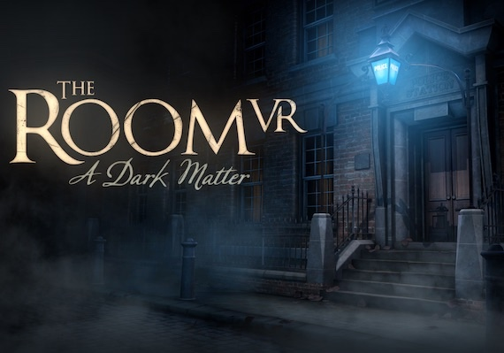
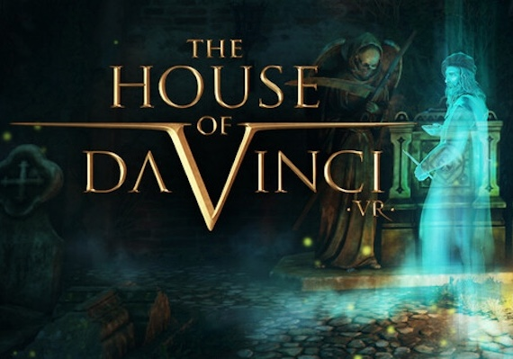
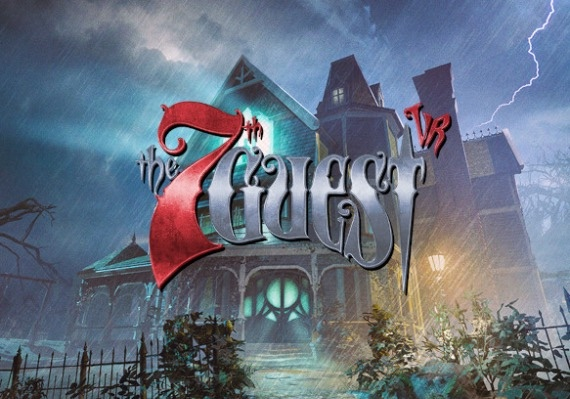
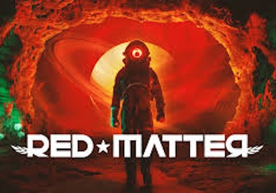
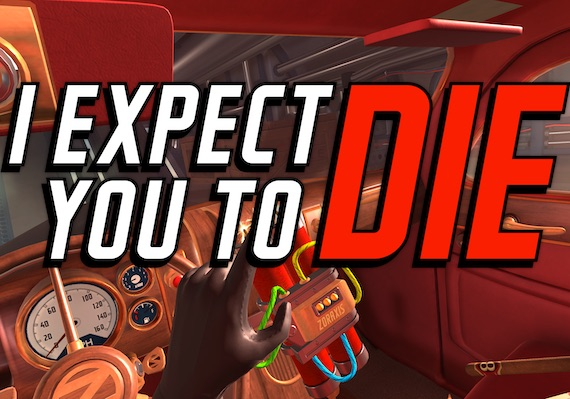

- The Room
- About: The British Institute of Archaeology, London, 1908: The disappearance of an esteemed Egyptologist prompts a Police investigation into the unknown. Explore cryptic locations, examine fantastic gadgets and enter an otherworldly space which blurs the line between reality and illusion. Designed from the ground up for the unique capabilities of virtual reality, players can inhabit the spine-tingling world of The Room and interact with its strange contraptions in this compelling new chapter.
- Trailer
- The House of DaVinci
- About: Experience the Renaissance like never before in The House of Da Vinci VR! This captivating puzzle adventure immerses you in the mysteries of Leonardo's world. Embark on a quest filled with puzzles, inventions, and hidden objects. As Da Vinci’s most promising apprentice, you are summoned to Florence only to find that Leonardo has mysteriously disappeared. Test your skills with war machines, complex lockboxes, and immersive room escapes. Use an extraordinary device that allows you to see events from the past, providing crucial insights and aiding in your quest. Explore 16th-century Florence, delving into Leonardo’s ingenious puzzles and devices. Many challenges are based on Da Vinci's actual inventions, alongside locations inspired by his original artworks and the historical city of Florence.
- Trailer
- The 7th Guest
- About: The wealthy recluse and toymaker, Henry Stauf, hides in the shadows, and there is a dark power here, shrouded in mysteries. Who is the 7th Guest? What does Henry want with them? And who will live to tell the tale?
As you explore the eerie mansion, the puzzles become increasingly challenging, and there are dangers lurking around every corner, with every shadow, creak, and flicker of light adding to the haunting tension.
Unlock new rooms and uncover hidden secrets, all while trying to keep your wits about you against the eerie horrors. The 7th Guest VR is the ultimate adventure for fans of mystery-puzzle games and those seeking a new and terrifying VR experience. - Trailer
- Red Matter
- About: Step into the role of Agent Epsilon, an Atlantic Union astronaut dispatched to a deserted Volgravian base on Rhea, Saturn's mysterious moon. Amid a dystopian Cold War, you're tasked with uncovering a clandestine project that could change humanity's destiny forever.
- Trailer
- I Expect You to Die
- About: I Expect You To Die places you in the well-polished shoes of an elite secret agent.
The Agency expects you to escape each of the seven missions. Immerse yourself in the game, and, using your smarts, your wits, and the power of telekinesis, a special ability given to all agents in the field. - Trailer




